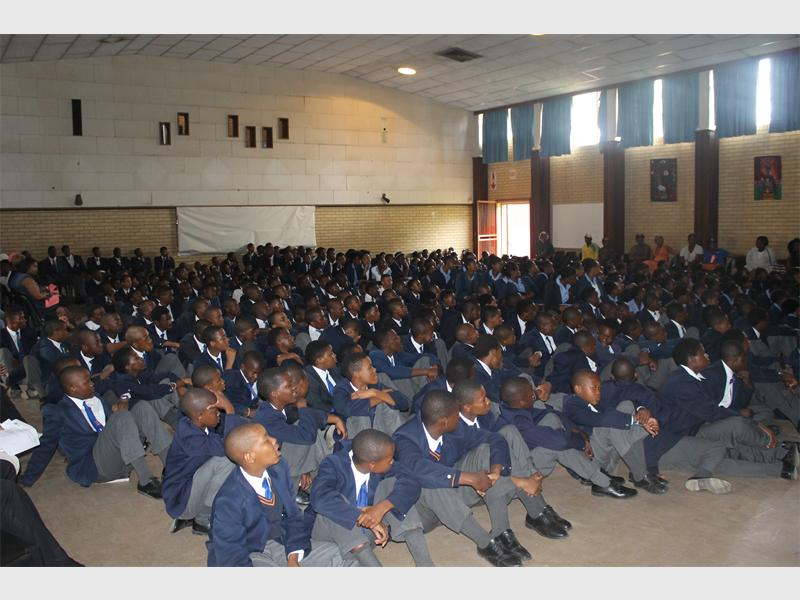
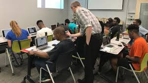

Personal Details
My name is Vuyo Base, I grew up in NY126-20, Gugulethu 7750, section 3 and this is where I grew up and did almost everything.

My name is Vuyo Base, I grew up in NY126-20, Gugulethu 7750, section 3 and this is where I grew up and did almost everything.
I attended my lower grades from grade 1 to grade seven at Xolani Public Primary School. This is where I started falling in love with computers as this was the first primary school in the entire Western Cape Government Schools that had an previlage to have a computer lab.
In 2007 I started at Linga High School where by we had free access to the school computer lab. This is where decided to choose Computer Application Technology (CAT) as my favourate subject in grade 10. I matriculated in the same school in 2011. 
Afer matric I applied in CPUT, that's where I wantend to study for the following year which was 2012, but things didn't go ahead as planned. This is when I decided join Vida e Caffe, and that's when I became a fully qualified Barista. I then worked for the catering company Fedics as a Barista aswell and I was based at Absa (Aliens) As I was making and serving coffees at the Aliens office, as the time goes by, I got intrested in what they are doing which was programming, I was always asking them all the technical based questions and I was granted an opportunity which was to study programming while I was working. At first Roger gave me lessons spending an hour twice a week, obviously this was not enough and sometimes he wouldn't have time to teach me as he also have work to do, that is when I decided to carry on studying by myself taking online tutorals, text books that I got from the people in the office as they were also very supportive This obviously meant that I should put extra amount of time after hours of studying afer work.
This is where I got an amazing opportunity to do a full 6 months course after I realized that there are deep concepts that I cannot cover by myself or my mentor Roger Weiss. This is when I decided that I really need to attend the full time Java short course at Oracle University, which is the school that the previous interns at the Aliens office are coming from and brought them positive opportunities for their future. 
After the full time course that I have attended at Oracle university, I was granted this amazing opportunity to be the software developer intern where I was taught programming at Aliens office.